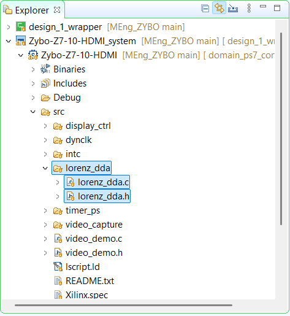

PS driver for the IP
A page of register access code: parameters, load, step, read.
07.1Add src/lorenz_dda/ to the app
What I did
- New files
lorenz_dda.c/lorenz_dda.hunderZybo-Z7-10-HDMI/src; refresh the project so Vitis compiles them. - Register offsets are hand-copied from the Verilog map (word index × 4).
Why
The auto-generated BSP driver only knows SLV_REG0-6, so the app owns the register names.
Code · register offsets and fixed-point helpers (C)
ivan_lorenz_hdmi/Zybo-Z7-10-HDMI/src/lorenz_dda/lorenz_dda.c (lines 6-26)
/* lorenz_dda_driver AXI4-Lite register offsets - see lorenz_dda_driver_slave_lite_v1_0_S00_AXI.v's REG_* localparams (word index * 4 = byte offset). */
#define LORENZ_DDA_CTRL_OFFSET 0x00 /* R/W bit0=enable(pulse), bit1=load(pulse) */
#define LORENZ_DDA_STATUS_OFFSET 0x04 /* R bit0=done (1 AXI-clock pulse only) */
#define LORENZ_DDA_XINIT_OFFSET 0x08 /* R/W signed Q6.20 */
#define LORENZ_DDA_YINIT_OFFSET 0x0C /* R/W signed Q6.20 */
#define LORENZ_DDA_ZINIT_OFFSET 0x10 /* R/W signed Q6.20 */
#define LORENZ_DDA_SIGMA_OFFSET 0x14 /* R/W signed Q6.20 */
#define LORENZ_DDA_RHO_OFFSET 0x18 /* R/W signed Q6.20 */
#define LORENZ_DDA_BETA_OFFSET 0x1C /* R/W signed Q6.20 */
#define LORENZ_DDA_DT_OFFSET 0x20 /* R/W raw right-shift count, NOT Q6.20 - see header */
#define LORENZ_DDA_XNEXT_OFFSET 0x24 /* R signed Q6.20 */
#define LORENZ_DDA_YNEXT_OFFSET 0x28 /* R signed Q6.20 */
#define LORENZ_DDA_ZNEXT_OFFSET 0x2C /* R signed Q6.20 */
#define LORENZ_DDA_CTRL_ENABLE_BIT 0x1u
#define LORENZ_DDA_CTRL_LOAD_BIT 0x2u
/* Q6.20 fixed point <-> float, same format the IP/solver uses. */
typedef signed int lorenz_fix;
#define LORENZ_FIX2FLOAT(a) (((float)(a)) / 1048576.0f)
#define LORENZ_FLOAT2FIX(f) ((lorenz_fix)((f) * 1048576.0f))
07.2Fixed-point and the DT trap
What I did
- Values ↔ float with
raw / 1048576.0f(220); use signed 32-bitlorenz_fixso sign extension works. - DT is not Q6.20: write the raw shift count (dt=10 → step 2−10).
Why
Writing dt as fixed-point would silently give a huge shift and a frozen or garbage trace.
07.3Driver functions
What I did
LorenzDDA_SetParamswrites x0,y0,z0,σ,ρ,β (Q6.20) and dt (raw).Load: CTRL=2 then 0.Step: CTRL=1 then 0.ReadState: XNEXT/YNEXT/ZNEXT.ReadParams: read-back for checks.- Usage pattern below.
Why
Two writes per pulse because the hardware detects the rising edge (step) or the level (load).
Code · register-level driver functions (C)
ivan_lorenz_hdmi/Zybo-Z7-10-HDMI/src/lorenz_dda/lorenz_dda.c (lines 383-422)
void LorenzDDA_SetParams(u32 baseAddr, float x0, float y0, float z0,
float sigma, float rho, float beta, u32 dtShift)
{
Xil_Out32(baseAddr + LORENZ_DDA_XINIT_OFFSET, (u32) LORENZ_FLOAT2FIX(x0));
Xil_Out32(baseAddr + LORENZ_DDA_YINIT_OFFSET, (u32) LORENZ_FLOAT2FIX(y0));
Xil_Out32(baseAddr + LORENZ_DDA_ZINIT_OFFSET, (u32) LORENZ_FLOAT2FIX(z0));
Xil_Out32(baseAddr + LORENZ_DDA_SIGMA_OFFSET, (u32) LORENZ_FLOAT2FIX(sigma));
Xil_Out32(baseAddr + LORENZ_DDA_RHO_OFFSET, (u32) LORENZ_FLOAT2FIX(rho));
Xil_Out32(baseAddr + LORENZ_DDA_BETA_OFFSET, (u32) LORENZ_FLOAT2FIX(beta));
/* Raw shift count, NOT Q6.20 - see the file header comment. */
Xil_Out32(baseAddr + LORENZ_DDA_DT_OFFSET, dtShift);
}
void LorenzDDA_Load(u32 baseAddr)
{
Xil_Out32(baseAddr + LORENZ_DDA_CTRL_OFFSET, LORENZ_DDA_CTRL_LOAD_BIT);
Xil_Out32(baseAddr + LORENZ_DDA_CTRL_OFFSET, 0);
}
void LorenzDDA_Step(u32 baseAddr)
{
Xil_Out32(baseAddr + LORENZ_DDA_CTRL_OFFSET, LORENZ_DDA_CTRL_ENABLE_BIT);
Xil_Out32(baseAddr + LORENZ_DDA_CTRL_OFFSET, 0);
}
void LorenzDDA_ReadState(u32 baseAddr, float *x, float *y, float *z)
{
*x = LORENZ_FIX2FLOAT((lorenz_fix) Xil_In32(baseAddr + LORENZ_DDA_XNEXT_OFFSET));
*y = LORENZ_FIX2FLOAT((lorenz_fix) Xil_In32(baseAddr + LORENZ_DDA_YNEXT_OFFSET));
*z = LORENZ_FIX2FLOAT((lorenz_fix) Xil_In32(baseAddr + LORENZ_DDA_ZNEXT_OFFSET));
}
void LorenzDDA_ReadParams(u32 baseAddr, float *sigma, float *rho, float *beta, u32 *dtShift)
{
*sigma = LORENZ_FIX2FLOAT((lorenz_fix) Xil_In32(baseAddr + LORENZ_DDA_SIGMA_OFFSET));
*rho = LORENZ_FIX2FLOAT((lorenz_fix) Xil_In32(baseAddr + LORENZ_DDA_RHO_OFFSET));
*beta = LORENZ_FIX2FLOAT((lorenz_fix) Xil_In32(baseAddr + LORENZ_DDA_BETA_OFFSET));
*dtShift = Xil_In32(baseAddr + LORENZ_DDA_DT_OFFSET);
}Code · the whole software protocol in five lines (C)
LorenzDDA_SetParams(base, x0, y0, z0, sigma, rho, beta, dtShift); /* write 6 Q6.20 values + raw shift */
LorenzDDA_Load(base); /* CTRL=2, CTRL=0: x/y/z := init */
for (;;) {
LorenzDDA_Step(base); /* CTRL=1, CTRL=0: one Euler step */
LorenzDDA_ReadState(base, &x, &y, &z); /* XNEXT/YNEXT/ZNEXT */
}← 06 Vitis platform · 08 Plotter and demo app →
Generated from the project's chat history, git log and source files. Screenshots live in
docs-site/figures/ (see its README).